Параметри
Параметри технологічного процесу - це вимірювані чи контрольовані характеристики, які визначають чи впливають виконання конкретного виробничого чи технологічного процесу. Вони є числові значення або налаштування, які використовуються для контролю та оптимізації процесу.

Параметри з позиційним сигналом
Параметри з позиційним сигналом технологічного процесу зазвичай відносяться до систем автоматичного керування, де позиційний сигнал є одним із способів зворотного зв'язку для контролю та регулювання процесу. Позиційний сигнал є інформацією про поточне становище або стан елемента або об'єкта в процесі.